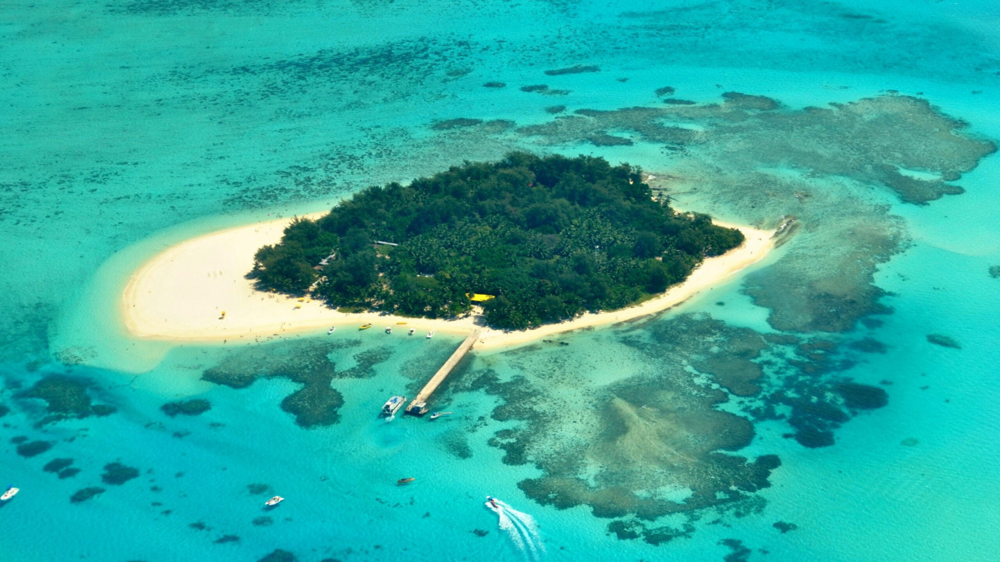
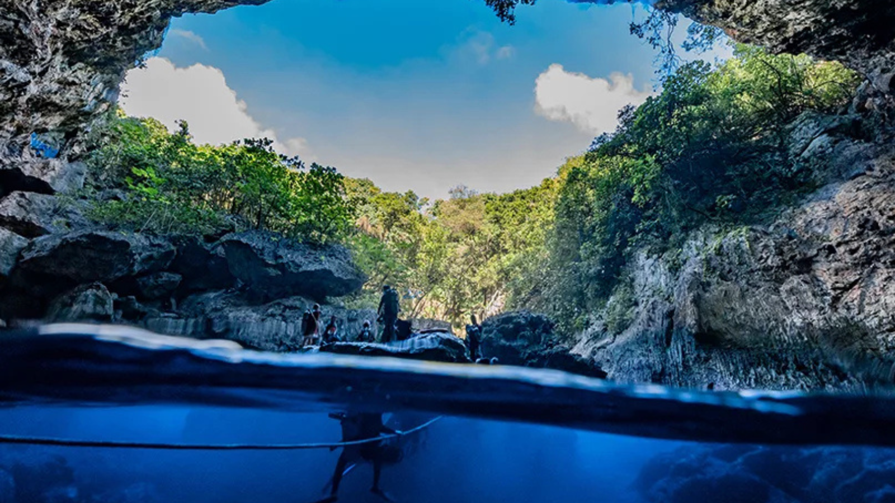
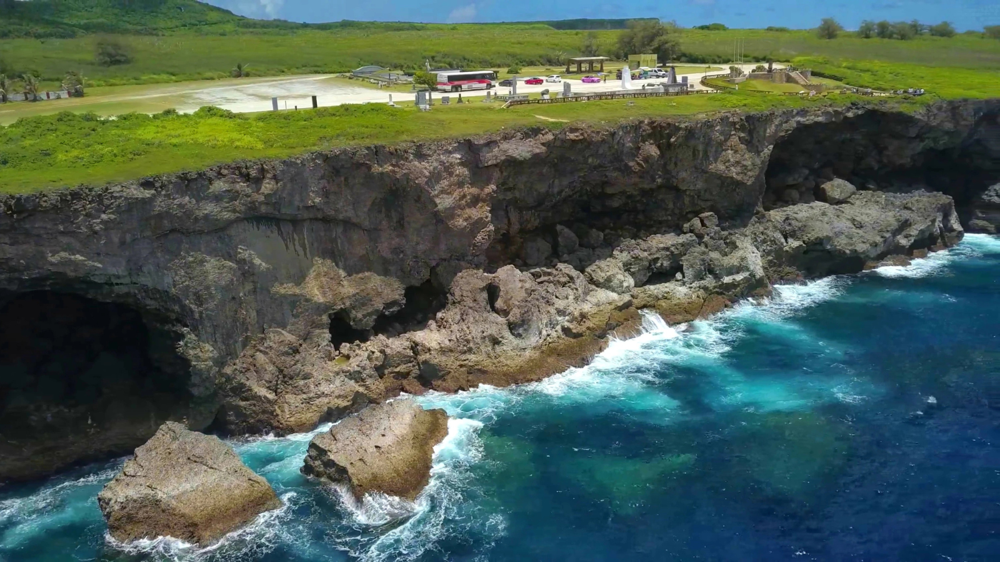
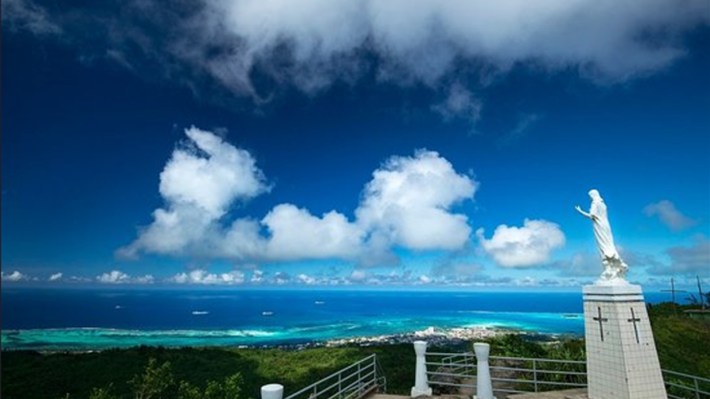
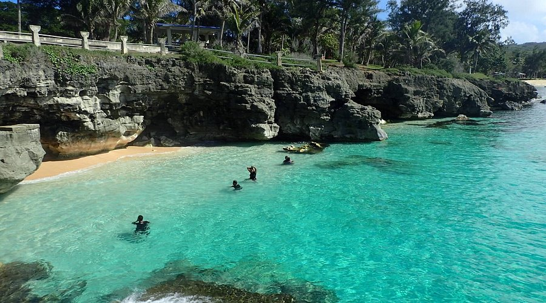

The Mariana Islands are home to a variety of eye-catching attractions, from historic landmarks to stunning natural sights. Whether you're exploring sites of cultural or historical importance, or taking in breathtaking views, there's something special waiting for you at every turn. Experience the unforgettable uniqueness of the Marianas!
|
Managaha Island, Saipan  |
The Grotto, Saipan  |
|
Banzai Cliff, Saipan  |
Mt Tapochau, Saipan  |
|
Taga Beach, Tinian  |
Swimming Hole, Rota 
|